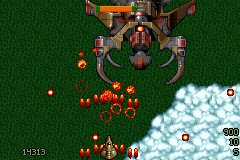

原始 runtime 路徑
Tyrian Sprite2 frame 由多個壓縮 component 組成。早期版本在 cache miss 時 查檔、清除 buffer、做 RLE 解碼、組成 32×32 frame，再逐 pixel 依 GBA palette pack。Boss 同時出現多部件與動畫幀時，一個 tick 可能連續觸發 五次以上 miss，足以跨過單幀預算。
依資料不變性切分
RLE 解壓與 component layout 對同一份 stock shape bank 永遠不變； palette、iced/filter 等映射則會隨關卡與事件變化。因此 build 階段只產生 原始 8-bit index，不烘焙 GBA palette：
- build：完整 bank RLE 無損解壓，保留原始 pixel index。
- L2 miss：ROM raw → 當前 palette/filter 查表 → EWRAM。
- L2 hit、VRAM miss：1 KiB DMA 上傳。
- L1 hit：直接沿用已在 VRAM 的 OBJ tiles。
這不是 per-level 圖形表。gameplay 仍從 HDT/LVL/egr 決定 哪一張 graphic；raw catalog 只提供完整且無損的通用表示。
Key、palette 與失效
L2 key 為 (shape_table, graphic, size, filter)。
L2 保存已上色 tile，因此關卡重新設定 enemy palette 時必須 flush；
若只清 VRAM L1，舊關卡色彩仍可能從 EWRAM 被重新上傳。
Boss 段落結果
Episode 1 第一關完整 trace 中，Boss performance window 的 Sprite2 L2 為 100 hits、21 misses、0 fallback；L1/VRAM 仍因動畫 frame 產生 121 uploads，但不再重做 RLE。正式回歸同時要求：
- raw catalog CRC 與 bytes 正確；
- L2 raw build 次數必須等於 L2 misses；
- RLE fallback、cache drop、projectile drop 必須為 0；
- Boss missed VBlank 維持在明確預算內。
